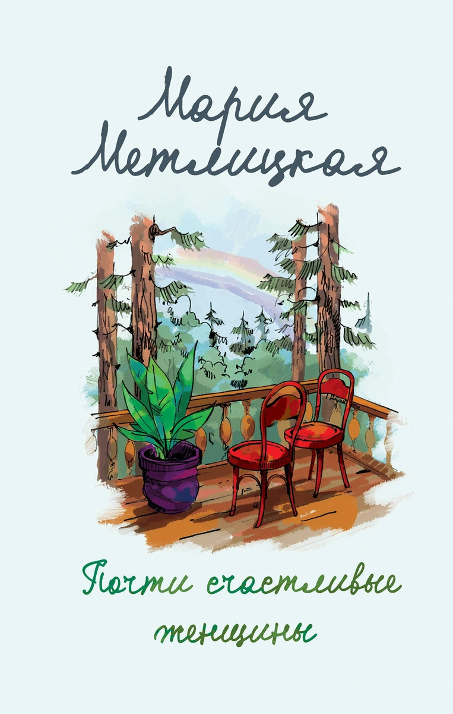
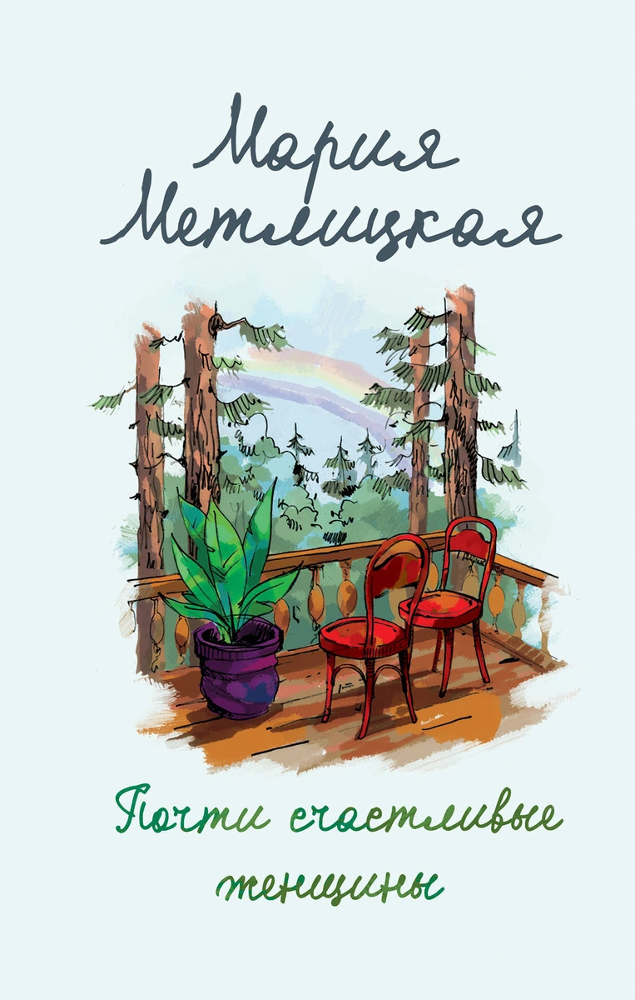
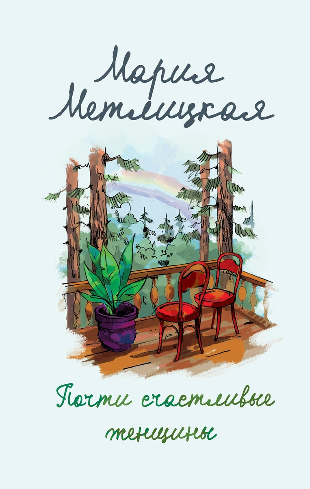
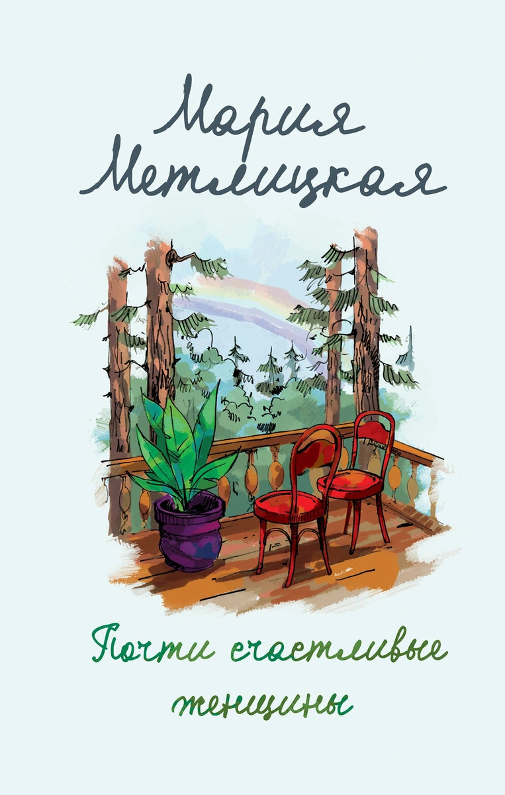

 

Аннотация к книге "Почти счастливые женщины"
Как часто в юности мы слышали: "Учись на своих ошибках". Как часто в зрелости мы сами говорили это своим детям. Впрочем, без особой надежды. Все знают: учиться на чужих ошибках невозможно. Опыт приходит лишь тогда, когда совершишь собственные. Аля Добрынина рано осталась сиротой. Бабушка Софья Павловна, которая заменила ей и мать, и отца, и прочих родственников, сокрушалась, что внучка повторяет ее ошибки. Но Аля, с ее горячностью, "правильностью", благородством, жила так, как велело ей сердце. Именно поэтому ей не однажды пришлось пережить предательство, разочарование, крах надежд. Но жизни без ошибок не бывает. И Аля, став совсем взрослой, понимает: главное — в ее жизни была любовь, настоящая, всепоглощающая. А значит, она почти счастливая женщина. Потому что быть совсем счастливой, наверное, невозможно.
Мария Метлицкая размышляет о вечных темах: что такое счастье и возможно ли прожить жизнь без ошибок.
Алевтина надеялась, что ее дочь точно будет счастливой. Даже не просто счастливой, а первой счастливой женщиной в их семье! Все благоволило этому – у нее был любящий муж, дети, уютный дом, никаких скандалов и передряг. Казалось, что так будет всегда, но вдруг у ее Аньки, верной жены и примерной матери, случился роман…
Все женщины в семье Алевтины были по-своему несчастными. Кому-то довелось пережить насилие, кому-то – предательство. Сама Алевтина хлебнула горя с лихвой, рано оставшись сиротой. Ее мама умерла, когда девочка еще училась в школе, а отец, которого она никогда и не знала, трагически погиб. Из родни у нее осталась только столичная бабушка Софья Павловна, которая спасла Алю от детского дома, но не уберегла от ошибок, боли и разочарования… Роман Марии Метлицкой «Почти счастливые женщины» – это история о женщинах, которые всю свою жизнь искали любовь и счастье. Удалось ли кому-то из них обрести его? Ответ найдете на страницах книги.